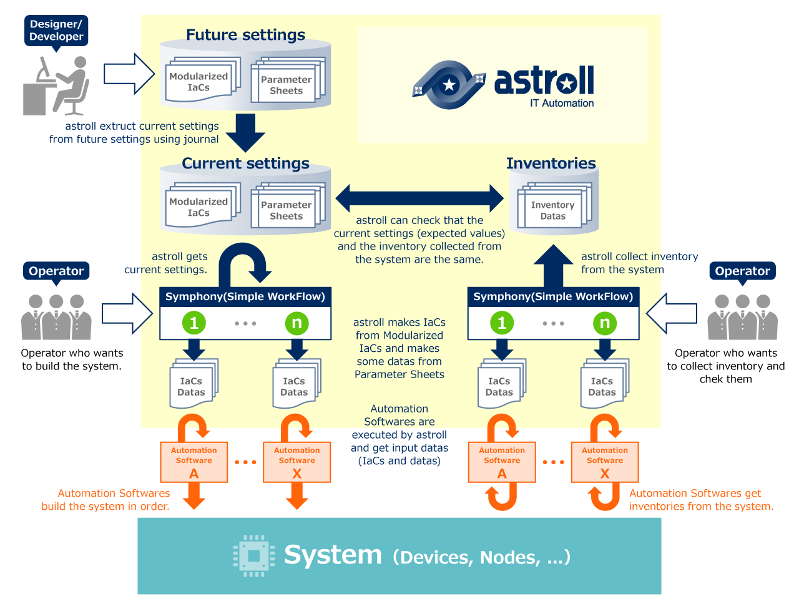
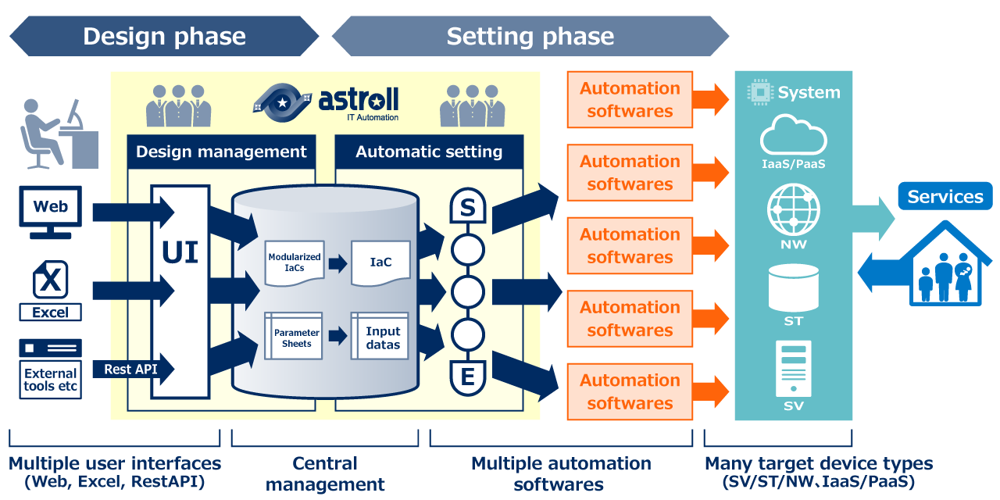

The world that astroll aims

astroll Overview

You can centrally manage IaCs and parameters from multiple user interfaces.

Using astroll, you can centrally manage the parameters to be input to the system.
You can manage them using astroll's web user interface, or Spreadsheet (Excel), or Machine interface (Rest API).
Improved reusability by IaCs that are modularized and managed by astroll.
astroll helps you to modularize and manage IaCs.
When you use astroll to build a system automatically, astroll joins together the modularized IaCs to create a workflow, and combines that workflow with the parameters to execute.
Such a mechanism allows you to cut out generic IaCs, modularize it, and reuse it in various workflows.
Execution management of automation softwares by astroll.
IaCs that make up the workflow is executed by appropriate automation softwares such as ANSIBLE.
You can choose which automation software to use based on the system integration you want to execute and the features of automation software.
Real-time monitoring of execution status by astroll.
You can monitor the execution status of the automation softwares in real time using the interface of astroll.
You can place a hold point in the middle of your workflow.
You can also make an emergency stop if an unexpected event occurs during workflow execution.
You can get execution logs which ware collected by astroll and get reports of success or failure.
astroll Application
Acquisition and collection of system inventories.
You can collect system inventories in astroll by acquiring system inventories using IaCs of automation softwares.
astroll can be used for IT asset management.
astroll can be used for System inventory validity check.
You can use astroll to manage the generation of system settings you want to set in the future.
Therefore, expected current system settings that should be set in the system can be extracted from future system settings using journal.
You can check that the current settings (expected values) and system inventories collected from the system are the same.